The 12th century Bayon is the mesmerising, if slightly mind-boggling, state temple of Jayavarman VII and epitomises the creative genius and inflated ego of Cambodia's most celebrated king. Its 54 gothic towers are famously decorated with 216 gargantuan smiling faces of Avalokiteshvara that bear more than a passing resemblance to the great king himself. These huge heads glare down from every angle, exuding power with a hint of humanity - precisely the blend required to hold sway over such a vast empire, ensuring the disparate and far-flung population yielded to the king's magnanimous will.
The Bayon is decorated with 1.2km of extraordinary bas-reliefs incorporating more than 11,000 figures, depicting everyday life in 12th century Cambodia.
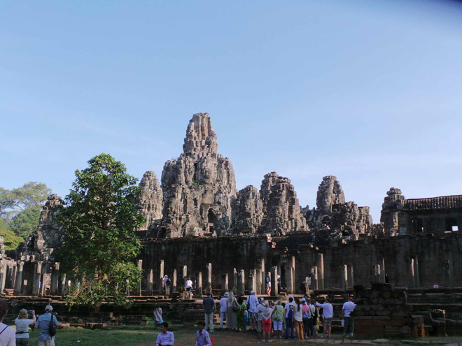
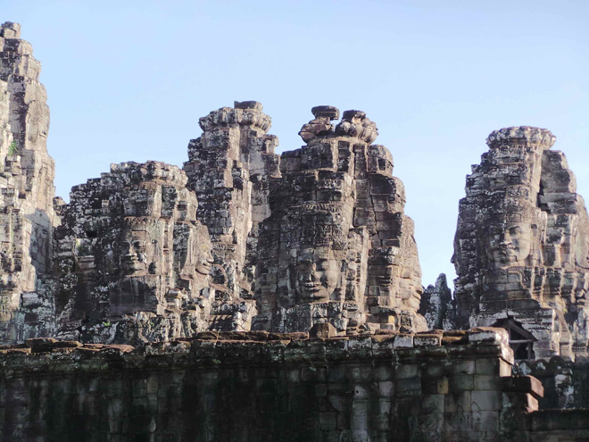
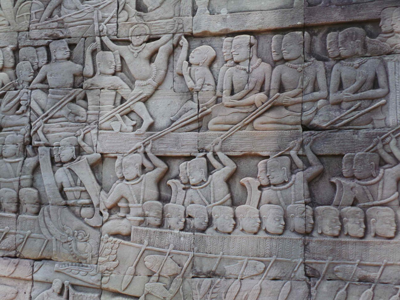
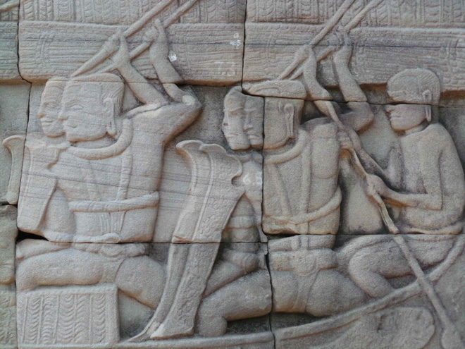
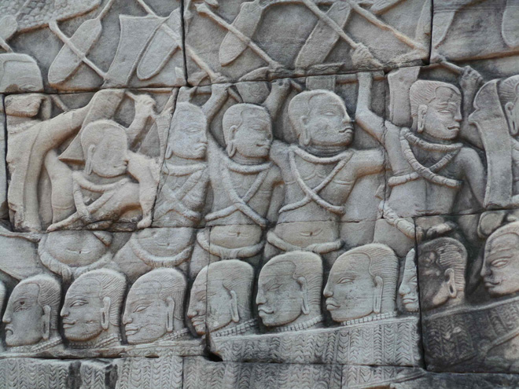
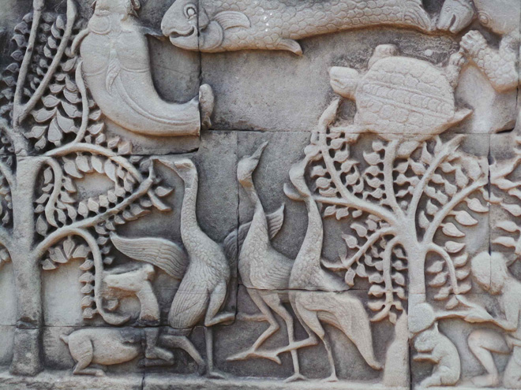
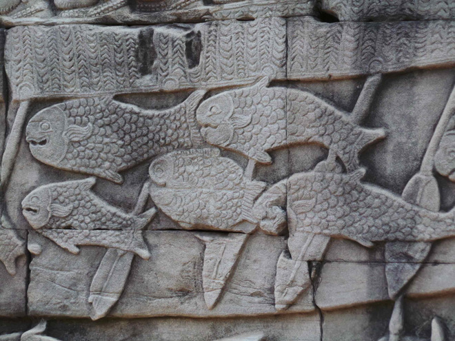
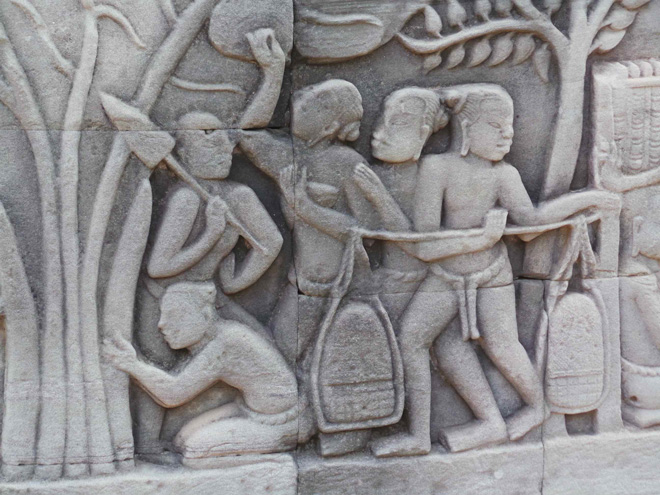
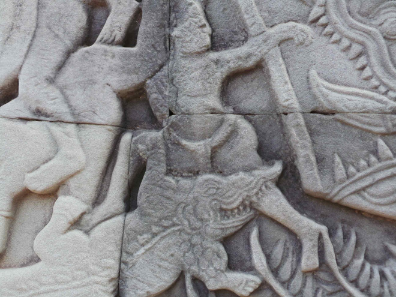
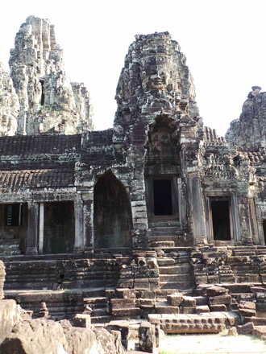
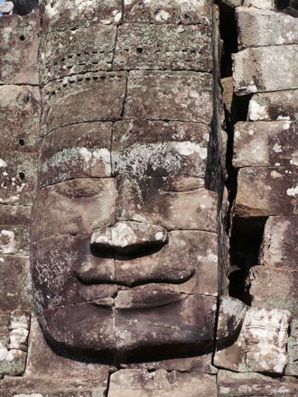
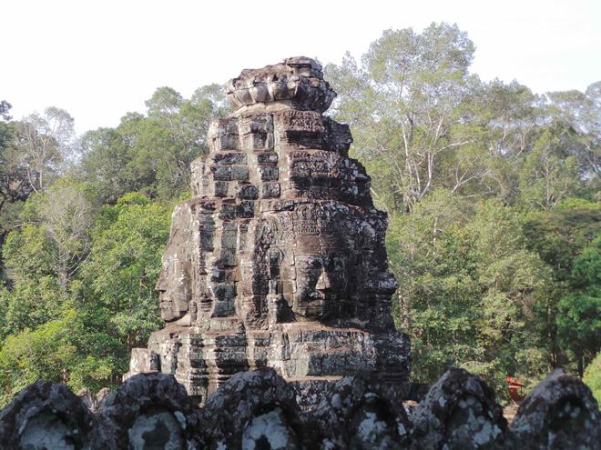
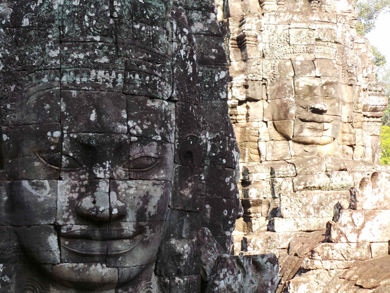
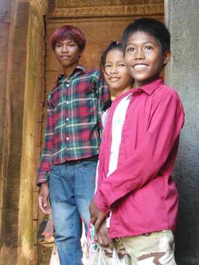
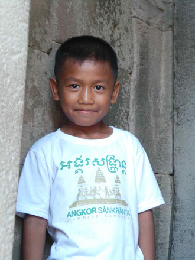
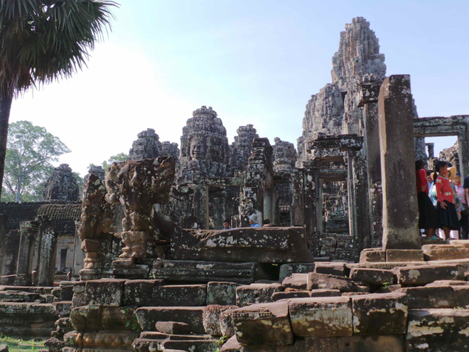
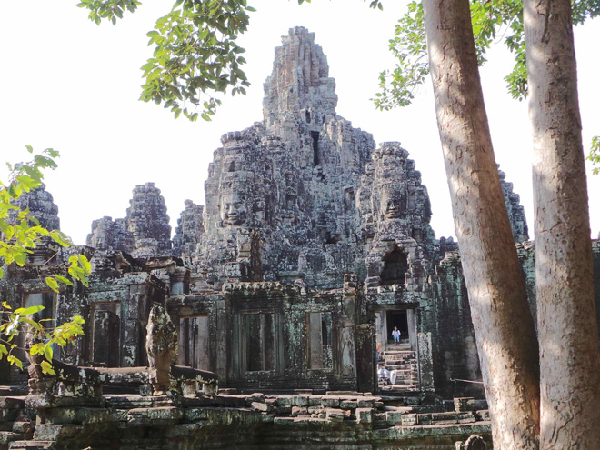
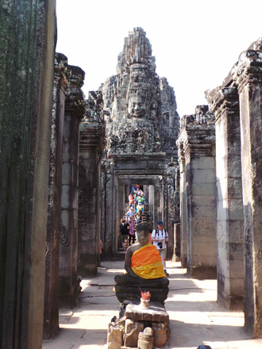
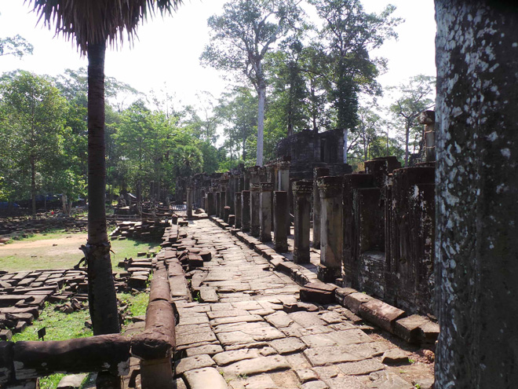